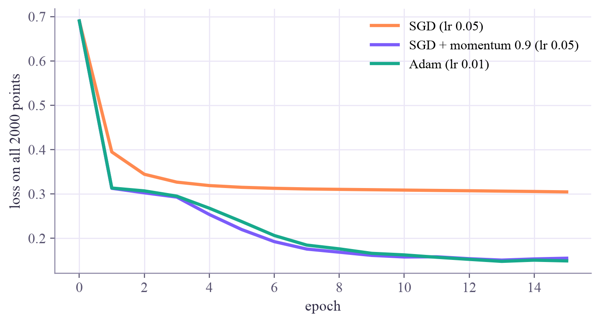
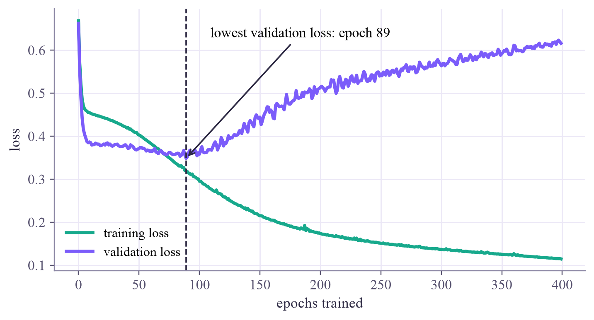

one batch: (32, 2) inputs and (32, 1) labels steps in one epoch: 63 (2000 examples in batches of 32, the last batch is smaller)
Machine Learning
 about 12 min
about 12 min ml-w5d4.ipynb
ml-w5d4.ipynb
Training habits: batches, Adam and early stopping
Three habits behind almost every trained network: cheap noisy steps, a smarter way to step, and knowing when to quit.
In this lesson you will
- Explain mini-batches, epochs and why noisy steps are fine
- Describe what momentum and Adam add to gradient descent
- Use a validation set to stop training at the right moment
Warm-up
1 minThe recipe is easy; the habits matter

You can already train a network: a loss, gradients from backpropagation, and small steps downhill. But people who train networks every day all use three extra habits. Each is one or two lines of PyTorch, and each can turn a failed run into a good one.
Big idea
4 minThree habits
1. Mini-batches. So far each step used the average gradient over the whole training set. With a million examples, that's a million forward and backward passes for one step. Instead, take a random mini-batch of examples (typically 32 to 256) and step with its gradient:
It's a noisy estimate of the full gradient, but on average it points the right way, and it's cheap. One pass through all the data is an epoch: steps. This is stochastic gradient descent (SGD).
2. Momentum and Adam. In a long, narrow valley plain gradient descent zigzags from wall to wall and crawls along the floor. Momentum lets the steps build up speed, like a ball rolling downhill:
Along the steady downhill direction the gradients agree, so grows: with , up to ten times a plain step. Across the valley they flip sign every step, so there they mostly cancel instead of adding up (the ball can still swing from wall to wall for a while). Adam keeps a running average of each weight's gradient () and of its square (), and divides one by the other:
(The hats are a small correction for the first few steps.) So every weight gets its own step size: weights with big, steady gradients and weights with tiny ones all move at a sensible pace. Adam is the usual first choice; its default learning rate in PyTorch is 0.001.
3. Early stopping. Keep a validation set aside (week 1). After each epoch, compute the validation loss. Training loss almost always keeps falling; validation loss falls, then turns back up once the network starts memorizing the training points. So remember the weights with the lowest validation loss, and stop when it hasn't improved for patience epochs.
Mini-batches make each step cheap, momentum and Adam make each step smarter, and early stopping decides when to quit.
Play
4 minRace the optimizers, then stop in time
Three optimizers start from the same point with the same learning rate. Press Race. Click the map to move the start.
Try this
In the narrow valley, gradient descent drops to the floor and then crawls along it. Momentum swings from wall to wall, but the speed it builds along the floor carries it to the bottom, and Adam curves smoothly there. Set η to 0.45 and gradient descent zigzags too; push it above 0.5 and gradient descent blows up. Switch the gradient to a batch of 8: every path jitters and none settles exactly at the bottom (that's why people often shrink η near the end of training). On the bumpy bowl, momentum rolls through the small dips that trap the other two.
Now a real training run: a big network on 40 noisy points. Watch both loss curves and the boundary.
Try this
Press Train all 400 epochs, then drag the epoch slider: around epoch 90 the boundary is smooth; by epoch 400 it bends around single noisy points. Then set the patience to 3 and train with early stopping: it gives up on a flat stretch near epoch 14, long before the real best point.
Code
2 minThe habits in PyTorch
The notebook for this lessonEvery code cell below, with what it printed, is in
ml-w5d4.ipynb. To change the code and run it yourself, open the notebook in Google Colab (free, in your browser) or download it for your own Jupyter.import copy
import numpy as np
import torch
import matplotlib.pyplot as plt
from sklearn.datasets import make_moons
from torch.utils.data import TensorDataset, DataLoader
torch.set_num_threads(1)
X, y = make_moons(n_samples=2000, noise=0.25, random_state=0)
data = TensorDataset(torch.tensor(X, dtype=torch.float32), torch.tensor(y, dtype=torch.float32).reshape(-1, 1))
loader = DataLoader(data, batch_size=32, shuffle=True) # shuffle: a fresh random order every epoch
xb, yb = next(iter(loader))
print("one batch:", tuple(xb.shape), "inputs and", tuple(yb.shape), "labels")
print("steps in one epoch:", len(loader), "(2000 examples in batches of 32, the last batch is smaller)")What it printed in the notebook
def make_net(seed=0):
torch.manual_seed(seed)
return torch.nn.Sequential(torch.nn.Linear(2, 32), torch.nn.Tanh(), torch.nn.Linear(32, 1))
loss_fn = torch.nn.BCEWithLogitsLoss()
X_all, y_all = data.tensors
def full_loss(net):
with torch.no_grad():
return loss_fn(net(X_all), y_all).item()
net = make_net()
opt = torch.optim.SGD(net.parameters(), lr=0.5)
for epoch in range(10):
opt.zero_grad()
loss_fn(net(X_all), y_all).backward() # the whole dataset: one step per epoch
opt.step()
print(f"whole dataset per step, 10 epochs = 10 steps: loss {full_loss(net):.3f}")
net = make_net()
opt = torch.optim.SGD(net.parameters(), lr=0.5)
for epoch in range(10):
for xb, yb in loader: # batches of 32: 63 steps per epoch
opt.zero_grad()
loss_fn(net(xb), yb).backward()
opt.step()
print(f"batches of 32, 10 epochs = {10 * len(loader)} steps: loss {full_loss(net):.3f}")What it printed in the notebook
whole dataset per step, 10 epochs = 10 steps: loss 0.356 batches of 32, 10 epochs = 630 steps: loss 0.160
def train(make_opt, epochs=15):
net = make_net()
opt = make_opt(net.parameters())
order = torch.Generator().manual_seed(1) # the same batches for every optimizer
curve = [full_loss(net)]
for epoch in range(epochs):
for xb, yb in DataLoader(data, batch_size=32, shuffle=True, generator=order):
opt.zero_grad()
loss_fn(net(xb), yb).backward()
opt.step()
curve.append(full_loss(net))
return curve
curves = {
"SGD (lr 0.05)": train(lambda p: torch.optim.SGD(p, lr=0.05)),
"SGD + momentum 0.9 (lr 0.05)": train(lambda p: torch.optim.SGD(p, lr=0.05, momentum=0.9)),
"Adam (lr 0.01)": train(lambda p: torch.optim.Adam(p, lr=0.01)),
}
fig, ax = plt.subplots(figsize=(6.4, 3.4), layout="constrained")
for (name, curve), color in zip(curves.items(), ["#ff8a50", "#7b5cfa", "#17a98c"]):
ax.plot(curve, label=name, color=color, lw=2.5)
print(f"{name:30s} loss after 15 epochs: {curve[-1]:.3f}")
ax.set_xlabel("epoch")
ax.set_ylabel("loss on all 2000 points")
ax.legend()
plt.show()What it printed in the notebook
SGD (lr 0.05) loss after 15 epochs: 0.305 SGD + momentum 0.9 (lr 0.05) loss after 15 epochs: 0.155 Adam (lr 0.01) loss after 15 epochs: 0.149

Plain SGD stalls on a plateau; momentum and Adam get past it. Swapping the optimizer is a one-line change.
T = lambda a: torch.tensor(a, dtype=torch.float32)
Xtr, ytr = make_moons(40, noise=0.35, random_state=2)
Xva, yva = make_moons(300, noise=0.35, random_state=102)
Xte, yte = make_moons(2000, noise=0.35, random_state=202)
Xtr, Xva, Xte = T(Xtr), T(Xva), T(Xte)
ytr, yva, yte = T(ytr).reshape(-1, 1), T(yva).reshape(-1, 1), T(yte).reshape(-1, 1)
def big_net():
torch.manual_seed(0)
return torch.nn.Sequential(torch.nn.Linear(2, 64), torch.nn.Tanh(), torch.nn.Linear(64, 64), torch.nn.Tanh(), torch.nn.Linear(64, 1))
def one_epoch(net, opt, order):
perm = torch.randperm(len(Xtr), generator=order)
for i in range(0, len(Xtr), 8): # batches of 8
idx = perm[i:i + 8]
opt.zero_grad()
loss_fn(net(Xtr[idx]), ytr[idx]).backward()
opt.step()
def evaluate(net, X, y):
with torch.no_grad():
out = net(X)
return loss_fn(out, y).item(), ((out > 0).float() == y).float().mean().item()
net = big_net()
opt = torch.optim.Adam(net.parameters(), lr=0.002)
order = torch.Generator().manual_seed(0)
train_curve, val_curve = [], []
for epoch in range(400):
train_curve.append(evaluate(net, Xtr, ytr)[0])
val_curve.append(evaluate(net, Xva, yva)[0])
one_epoch(net, opt, order)
best = int(np.argmin(val_curve))
fig, ax = plt.subplots(figsize=(6.4, 3.4), layout="constrained")
ax.plot(train_curve, color="#17a98c", lw=2.5, label="training loss")
ax.plot(val_curve, color="#7b5cfa", lw=2.5, label="validation loss")
ax.axvline(best, color="#2c2842", ls="--", lw=1.2)
ax.annotate(f"lowest validation loss: epoch {best}", (best, val_curve[best]), xytext=(best + 20, 0.63),
arrowprops=dict(arrowstyle="->", color="#2c2842", lw=1.2))
ax.set_xlabel("epochs trained")
ax.set_ylabel("loss")
ax.legend()
plt.show()
print(f"lowest validation loss after {best} epochs; test accuracy after all 400 epochs: {evaluate(net, Xte, yte)[1]:.3f}")What it printed in the notebook

lowest validation loss after 89 epochs; test accuracy after all 400 epochs: 0.725
Your turn
2 minYour turn: early stopping
Add early stopping to the training loop with a patience of 20 epochs. Keep a copy of the best weights and put them back at the end. Does the test accuracy beat the 0.725 from training all 400 epochs?
net = big_net()
opt = torch.optim.Adam(net.parameters(), lr=0.002)
order = torch.Generator().manual_seed(0)
patience = 20
best_loss, best_epoch, best_state, waited = float("inf"), 0, None, 0
for epoch in range(400):
val_loss = evaluate(net, Xva, yva)[0]
# TODO: if val_loss < best_loss, remember it, the epoch and a copy of the weights
# (copy.deepcopy(net.state_dict())), and set waited back to 0. Otherwise add 1 to waited.
# TODO: break out of the loop once waited reaches patience
one_epoch(net, opt, order)
# TODO: put the best weights back: net.load_state_dict(best_state)
print(f"stopped at epoch {epoch}, kept the weights from epoch {best_epoch}")
print(f"test accuracy: {evaluate(net, Xte, yte)[1]:.3f}")Need a hint?
Inside the loop: if val_loss < best_loss: store best_loss, best_epoch, best_state = copy.deepcopy(net.state_dict()) and set waited = 0; else: add one to waited and break when it reaches patience. Without deepcopy you'd store a reference to weights that keep changing.
Show a solution
net = big_net()
opt = torch.optim.Adam(net.parameters(), lr=0.002)
order = torch.Generator().manual_seed(0)
patience = 20
best_loss, best_epoch, best_state, waited = float("inf"), 0, None, 0
for epoch in range(400):
val_loss = evaluate(net, Xva, yva)[0]
if val_loss < best_loss:
best_loss, best_epoch, waited = val_loss, epoch, 0
best_state = copy.deepcopy(net.state_dict()) # a real copy, not a reference that keeps changing
else:
waited += 1
if waited >= patience:
break
one_epoch(net, opt, order)
net.load_state_dict(best_state)
print(f"stopped at epoch {epoch}, kept the weights from epoch {best_epoch} (validation loss {best_loss:.3f})")
print(f"test accuracy with early stopping: {evaluate(net, Xte, yte)[1]:.3f}")
print("training all 400 epochs gave 0.725: stopping early kept the boundary smooth, and it took a quarter of the time.")What it printed in the notebook
stopped at epoch 109, kept the weights from epoch 89 (validation loss 0.349) test accuracy with early stopping: 0.852 training all 400 epochs gave 0.725: stopping early kept the boundary smooth, and it took a quarter of the time.
Check yourself
2 minQuick check
Question 1 of 3
You have 1,000 training examples and a batch size of 50. How many steps make one epoch?
Question 2 of 3
In a long, narrow valley, why does momentum beat plain gradient descent?
Question 3 of 3
Training loss is still falling, but validation loss has been rising for 30 epochs. What's happening?
Wrap-up
1 minToday in one sentence
Quantum link
Quantum circuits are trained with the same optimizers: Adam is the default in many quantum machine learning papers. And their gradients are noisy by nature, because every expectation value is estimated from a finite number of shots. Shot noise plays the role that mini-batch noise plays here.
Go deeper (optional)
ISLP section 10.7.2 (regularization and stochastic gradient descent). The free online book Deep Learning by Goodfellow, Bengio and Courville covers early stopping in section 7.8 (including why it acts like ridge regularization), and SGD, momentum and Adam in sections 8.3 and 8.5.
Next in Machine Learning: the week 5 project, a network that reads handwritten digits, including the ones you draw.

That's the lesson!
Tap the button to save it. Short and steady wins.
Marked by mistake? Undo